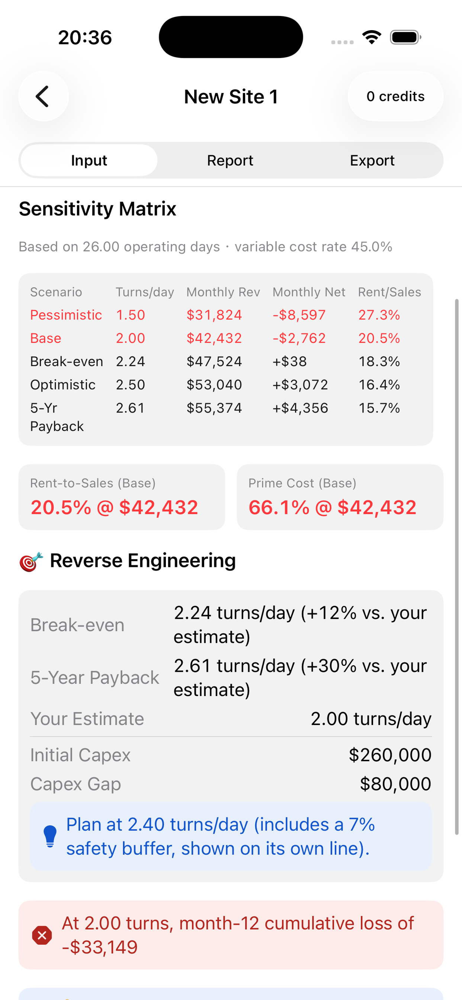
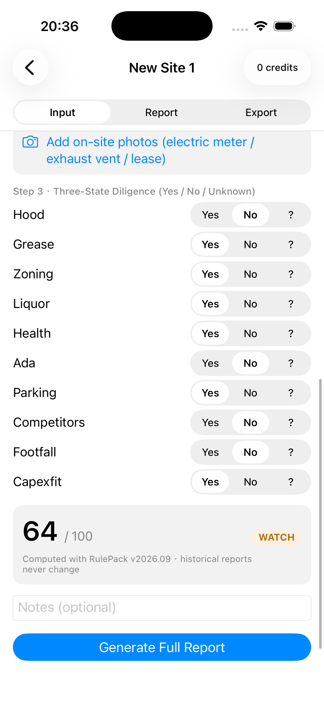
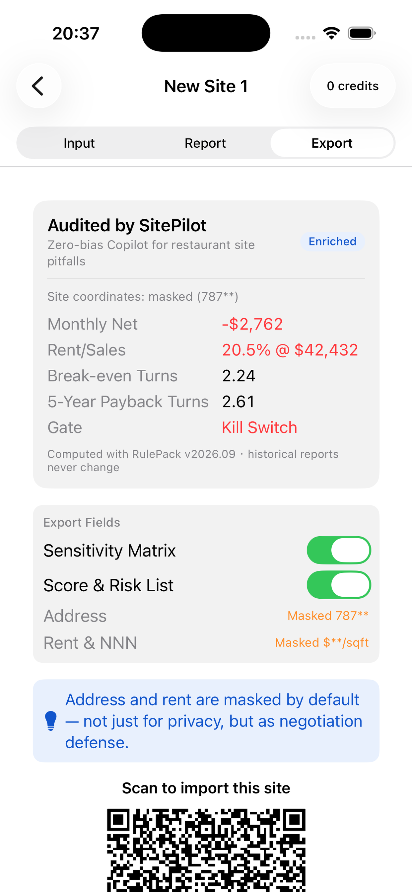

CASE STUDY · PUBLISHED · iOS
SitePilot
In the US, first-time restaurant founders — many of them immigrants — sign a multi-year lease before they discover the site cannot carry the rent. By then the decision is a debt that is almost impossible to undo.
Independent product manager · 0 → 1. I owned the problem definition, the product strategy and every trade-off, then shipped a live v1.0 to the US App Store. This is not a demo, a prototype or a concept deck.
Consultants are priced for chains. Scoring tools are black boxes. A general AI will confidently produce numbers that cannot be reproduced twice for the same inputs. So I built SitePilot as a decision tool: a financial simulation with a recomputable, offline verdict that a founder can open, challenge and take to a landlord. This case is the reasoning behind it — who it is for, what I refused to build, and what I learned.
THE PRODUCT IN PRACTICE

01 / THE USER'S PROBLEM
A first-time founder finds a corner unit, likes the footfall, and signs a five-year lease. Only afterwards do the real costs surface: triple-net charges on top of base rent, a liquor-license timeline measured in months, accessibility remediation, a personal guarantee. Rent alone on a multi-year lease is a six-figure commitment in most US metros — an illustration of scale, not a measured figure. What looked like a location decision has become a long, hard-to-reverse liability.
For immigrant founders the gap is wider. NNN rent, permit sequencing and local compliance are unfamiliar vocabulary, and the expensive part is not knowing which question was never asked. The pain is not a shortage of advice. It is the absence of a way to see what is still unknown before committing.
Every obvious substitute fails this particular decision. A consultant is priced for a chain with a real estate team. A black-box score cannot be argued with at the negotiating table. A general-purpose LLM will sound persuasive while producing different numbers on different days — unacceptable when the same inputs must give the same answer. So the opportunity I defined was deliberately narrow: not a smarter assistant, but a verdict a founder can open, recompute and challenge before signing.
An exploratory observation of restaurant-consulting livestreams in China produced a demand signal, not a quantified audience study. Desk research added context: the National Restaurant Association's 2025 operations release reports median pre-tax income of 2.8% of sales for full-service and 4.0% for limited-service restaurants, so a thin margin leaves almost no room for an occupancy mistake. These are background signals, not evidence of willingness to pay.
See the sources and evidence boundaries ↗02 / SCENE & CONSTRAINTS
Site search is a short, intense burst: two to four weeks of viewing shortlisted units, often in basements or unfinished shells where connectivity is unreliable. Then a lease is signed and the choice is effectively irreversible. I treated these three facts as product requirements rather than background colour — they decided the architecture and the business model before any feature was drawn.
The product is built around step 05, not step 03. A tool that only helps people feel good about a site they already want would miss the entire point.
Who it is for: first-time restaurant founders and site-selection consultants evaluating a shortlisted US site, including immigrants navigating unfamiliar local rules. Who it is not for: landlords, chain expansion teams, or anyone seeking legal, zoning or permit conclusions and a market-wide traffic dataset.
Thresholds (rent-to-sales, prime cost, the 25% feasibility gate) are product rules calibrated from public benchmarks, not predictions. They require local calibration city by city.
03 / AI PRODUCT BOUNDARY STRATEGY
It would have been easy to frame SitePilot as an AI product: describe the site, let the model produce an assessment, ship the demo. I rejected that framing. The core of this product is a financial simulation with an auditable verdict — rent-to-sales, prime cost, payback and a feasibility gate. AI is an optional explanation layer, not the decision maker. That distinction is the case.
The reason sits in the decision context. Someone about to sign a five-year lease needs the same inputs to produce the same answer on Tuesday and on Friday, needs to see every assumption behind it, and needs to be able to argue with the conclusion across a table from a landlord. A probabilistic text generator is the wrong instrument for that promise, however fluent it sounds.
Every number, score and feasibility verdict is computed locally by deterministic code. The model may add optional wording around a result — it cannot compute, adjust or overrule that result.
What the model is allowed to do is deliberately small: six qualitative, nullable fields — plain-language explanation, what to check next, talking points for a conversation. Each is labelled "AI inference — not part of the base score", each is generated only when the user asks, and missing fields are shown as a dash rather than filled with plausible text. If the model is slow, wrong, or switched off entirely, the report is unchanged.
Local verdict → optional, user-triggered AI wording → never feeds back into the score or the gate
Trade-off: the AI feels less "smart" in a demo. In exchange, identical inputs always produce the same verdict, and the assistant can be switched off without breaking the product.
An early review proposed a plus-or-minus 15 point "AI adjustment" to the score. It was removed from the specification. The guard rails that enforce the boundary — output schema, request signing, quotas and eight degradation paths — are documented in the technical appendix at the end of this case.
04 / THE FOUR TRADE-OFFS
This is the part of the case I would want an interviewer to interrogate. Each choice names what I refused, what it cost, and how I checked it. None of them is free — a product decision without a price is usually a product decision that has not been made yet.
The temptation is to help the user win the deal: a polished negotiation script makes the product feel instantly useful. I inverted it. A feasibility gate first computes how much the rent would have to fall for the assumptions to work — under 10% open, 10–25% caution, above 25% blocked. If all three rescue paths fail, the report recommends walking away and withholds the negotiation script entirely.
Trade-off → Choosing a hard feasibility gate over a polished negotiation script means the app can talk a paying user out of the deal — and can talk them out of paying at all.
Diligence is captured as Yes / No / Unknown rather than a checklist that silently defaults to zero. Only a "No" reduces a score; an "Unknown" reduces confidence, and above five unknowns the score locks at insufficient instead of manufacturing a reassuring number. A sensitivity matrix shows five scenarios with their own rent-to-sales and prime cost, so the user sees which assumption is doing the work.
Trade-off → Publishing an honest "insufficient" result means some users pay, fill in the form, and get no score at all. That is an incomplete experience I chose deliberately.

Financial results, scoring, gating and scripts are deterministic local code. The model receives only a derived business summary when the user asks, and returns six optional qualitative fields that never enter the base score. It is a deliberately unglamorous amount of AI for a product launched during an AI boom.
Trade-off → The product is less "AI-native" to demo, and several hundred lines of guard code exist to protect a feature that is optional.
A review recommended server-side confirmation before granting entitlements, plus a third-party SDK. I shipped on-device verification instead: grant the entitlement first, then synchronise the ledger in the background with a persistent retry queue. The user receives value at the moment they pay; bookkeeping catches up quietly.
Trade-off → Granting value before the ledger confirms leaves a residual refund-window risk, and signature code that I own forever.

In this development example, the base scenario shows a monthly loss of $2,762 and rent-to-sales of 20.5% at $42,432 revenue. Pairing the ratio with its revenue assumption makes the result interpretable. It is a worked example, not a forecast for a real restaurant.
Unedited simulator captures · 13 Sep 2026. They illustrate the workflow, not the latest review build. Open either image for full detail.
05 / SYSTEM, SIMPLIFIED
One sentence is enough: the money math runs on the device, AI is an optional side branch that cannot touch the result, and only that branch plus purchase bookkeeping ever leave the phone. Everything else is an implementation detail.
Optional branch → AI wording only → never feeds back into the verdict
That split exists for product reasons, not technical ones. Offline calculation makes the verdict available in an unfinished unit. Deterministic code makes the same inputs reproduce the same answer. A frozen snapshot keeps an old report honest after a rule pack changes. Put together, they are what make a "no" defensible to a founder who badly wants a "yes".
Shipped in v1: one built-in rule pack (US-TX-Austin v2026.09, weights 40 / 35 / 25), snapshot isolation and the offline kernel. Not implemented in this release: Google Places / FSA / Census data, DeviceCheck or App Attest, provider switching, and metro-wide rule packs. Roadmap items, not shipped capabilities.
06 / LAUNCH & COMPLIANCE
App review exposed a mismatch that no unit test would have caught: a purchase could succeed, grant access, and still surface an error because a secondary ledger sync had failed. To a customer the distinction between payment and bookkeeping is invisible — they paid, and the app told them something went wrong.
I separated the responsibilities. Verification anchors local entitlement delivery; the ledger records the transaction afterwards, and its failures became silent with a persistent retry queue. The product decision is simple: the user gets value at the moment they pay, and internal bookkeeping never gets to contradict that.
Six rounds of App Store review reshaped the metadata, the purchase feedback and how reviewers reach the paid feature. The recurring lesson was that compliance is part of the product experience, not a checklist to clear after the product is finished.
The lesson: failure handling is part of the paid product experience. It must reflect whether the user received value.
Pricing design: $6.99 single / $19.99 five-pack / $79.99 annual; no monthly plan, no free trial; the core verdict and rejection reports stay free. "Unlimited" annual AI was justified by a documented cost estimate (~$0.0015 per call, ~$0.30 per heavy user per year) — an estimate, not measured spend.
Outcome: released 5 Nov 2026 on the US App Store, v1.0. The detailed review log, open engineering items and release facts are in the appendix.
07 / VALIDATION & WHAT I LEARNED
The goal of this release was to verify engineering feasibility and the core product hypothesis — that a recomputable veto is understandable and usable at the moment of a lease decision. It was not to acquire users at scale. SitePilot shipped to the US App Store on 5 Nov 2026 as v1.0, and there is no real market data yet. That is the expected state of a first experiment, not a failed outcome.
I keep three kinds of validation separate: engineering (does it compute correctly), product hypothesis (can a founder understand and act on the verdict), and market (does anyone want it enough to pay). Only the first has hard evidence today — 143 Swift tests and 38 Worker checks pass, and a worked example is pinned by GoldenCase. Publishing an app proves none of the other two, and I would rather say so plainly than imply traction that does not exist.
For a high-stakes, once-in-a-while B2C decision tool, the most informative behaviour is not activation or session length. It is how people handle missing information, and whether they accept a "no". If users never resolve Unknowns, the diligence UI is too expensive. If a veto is routinely overridden, the rule needs recalibration — not the user.
The next stage is to observe whether founders can restate the key assumptions in their own words, name a diligence question they had not considered, and change a real lease decision because of the verdict. I would pre-declare a bar for each of those before calling any number a success, and I would remove the paid AI tier if its fields are ignored rather than market it harder.
Published is a delivery fact, not a market conclusion.
The raw App Store snapshot — including the 0-download figure and its data-window explanation — is kept in the technical appendix rather than presented as a headline number. It is a coverage fact, not a product result.
08 / APPENDIX · DEEP DIVE
Everything below is real and verifiable. It is not the case for the product, so it stays collapsed. Open what is useful to you.
| Scene fact | Product consequence | What it ruled out |
|---|---|---|
| A 2–4 week burst of site visits | Single-use credits and a pack, not a recurring plan | Monthly subscription |
| Weak or no connectivity on site | Core math and the verdict run fully offline on-device | Cloud-dependent evaluation |
| Irreversible, high-cost commitment | Reproducible verdict plus a frozen report snapshot | A score that changes after a rule update |
| Guard | Implementation | What it protects |
|---|---|---|
| Output shape | OpenAI Responses API with strict json_schema, 800 max output tokens | Free-form model output |
| Three-layer score ban | Schema excludes numbers; Worker strips forbidden keys; client parser rejects nine score-like keys | Numbers drifting into the model's hands |
| Injection & abuse | Seven-category prompt sanitizer, 4,000-char ceiling, HMAC-signed headers, 60s window, 4,096B body cap | Instruction hijacking and runaway cost |
| Degradation | 5/min and 50/day quotas, kill switch, quota rollback, eight explicit fallbacks; the local report always survives | Trust when the AI is down, slow or empty |
User-triggered branch → optional AI explanation & wording · gpt-4o-mini via a signed Cloudflare Worker · no financial calculation or scoring
| Review theme | What broke in the reviewer's hands | Product lesson applied |
|---|---|---|
| Metadata & pricing | Old $9.99 / $29.99 price copy survived in submission text | De-price product IDs; regenerate all public metadata together |
| Purchase experience | Ledger error shown after a successful payment | Entitlement first, silent retry, one fulfillment path |
| Review sandbox | IAP could not be located; the app shipped US-only | Make IAP reachable to reviewers; state the shipped market explicitly |
| Released | 5 Nov 2026 · public App Store lookup, checked 10 Nov 2026 |
|---|---|
| Market / language | United States · English · USD / sqft |
| Version / Apple ID | 1.0 · 6811473992 |
| Data window | Newest Sales & Trends daily report: 30 Oct 2026 — it predates the release |
| Store link | apps.apple.com/us/app/sitepilot-restaurant-lease/id6811473992 ↗ |
Offline kernel, feasibility gate, three-state diligence, frozen snapshots, bounded AI with signed Worker, purchase verification, legal pages and a published US App Store build.
US demand, willingness to pay, and whether the verdict changes real decisions. No download, revenue, rating, retention or interview evidence exists yet; thresholds need local calibration.
Observe whether founders can restate key assumptions, name a useful diligence question, and understand the paid enhancement. Revise onboarding, rules and pricing before claiming fit.
Outcome: released 5 Nov 2026 on the US App Store, v1.0, after six rounds of review correspondence (last documented rejection 19 Oct 2026). The exact approval resolution is not documented here. Open at handoff: an end-to-end refund notification with a real Apple Server Notification, a sandbox purchase-to-refund drill, and dual-environment ASC URLs.
| Layer | Evidence available | What it does NOT prove |
|---|---|---|
| Engineering | 143 Swift tests / 0 failures; 38 Worker checks / 0 failures; GoldenCase pins the worked example; 2 UI walkthrough tests (~69s, 19 captures); security and IAP reviews; 13-item pre-submission checklist | That anyone wants this, or that the thresholds fit their city |
| Product hypothesis | Deterministic kernel, three-state diligence, frozen snapshots and eight fallbacks are implemented and testable | That founders understand Unknown, accept a blocked verdict, or value the paid AI fields |
| Market | App Store release 5 Nov 2026; no download, revenue, rating or retention data yet | Product-market fit. Nothing on this page is a growth result |
Worked example pinned by GoldenCase, not a forecast: $42,432 revenue, −$2,762 monthly result, 20.5% rent-to-sales, 2.24 turns to break even, 51.1% reduction required — which triggers the blocked verdict. Engineering counts are engineering validation, not outcomes.
Unknown rate and score-lock frequency; AI-field adoption and regeneration; behaviour after a blocked verdict; $6.99 conversion, refunds and retention; threshold recalibration by city. Each needs a pre-declared bar before a number is called a success.
If users never resolve Unknowns, the diligence UI is too expensive. If paid fields are ignored, remove the tier instead of marketing it harder. If a veto is routinely overridden, the rule — not the user — needs recalibration.
LIVE APP STORE DATA
—
No download signal yet: the newest Sales & Trends daily report predates the 5 Nov release. A zero or dash here is a data-window fact, not a product result — and no ratio is published because the two counters cover different windows.
Desk research was supplemented on 27 Sep 2026 while preparing this case. The original demand signal comes from livestream observation. No quantified livestream growth, US interviews, revenue, or customer savings are claimed.
| Material | Basis | Boundary |
|---|---|---|
| Market figures | National Restaurant Association 2025 operations release; SBA; Austin Public Health | Background context, not demand evidence |
| Release facts | Public App Store lookup baked into the site's weekly metrics snapshot | US storefront only; checked 10 Nov 2026 |
| Engineering counts & screens | Project test suites and reviews dated 25 Sep 2026; simulator captures 13 Sep 2026 | Engineering validation and an earlier build, not the shipping build |
Internal evidence: product specification, phase 3–4 decision records, Worker deployment checklist, IAP repair review and App Store submission metadata. This case does not claim Google Places / FSA / Census data, DeviceCheck, provider switching, or verified real-world decision improvement.
Numbers on this page are labelled by kind: worked example, engineering validation, documented estimate, or release fact. Thresholds require local calibration. Nothing here is legal or financial advice, and publication itself is not presented as product-market fit.